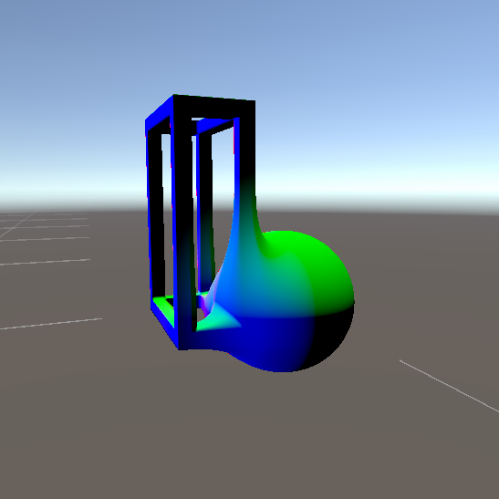

vec2 pos; uniform float time; uniform vec2 resolution; void main(void) { float gridSize = 10.0; pos = floor((gl_FragCoord.xy * 2.0 - resolution) / min(resolution.x, resolution.y) * gridSize) / gridSize; float d = length(pos) * 10.0; float ripple = sin(d - time * 2.0) / d; float red = 0.5 + 0.5 * sin(time * 0.5 + ripple + pos.x * 2.0); float green = 0.5 + 0.5 * sin(time * 0.7 + ripple + pos.y * 2.0); float blue = 0.5 + 0.5 * sin(time * 0.9 + ripple); gl_FragColor = vec4(red, green, blue, 1.0); }
<- backRaymarching Character Control
Here I venture into the intricate processes of raymarching, with a specific focus on integrating 3D Signed Distance Fields (SDFs) with skeletal animations. This approach has allowed me to experiment with creating characters that are both sculpted in a unique manner and animated procedurally.
The core idea of this project was to create a character controller that allowed for blending between separate physical forms seamlessly. By utilizing smooth minimum equations to blend the SDFs, I was able to create a meta-shape effect that lended itself to my initial goals.
Above is a demonstration of the character controller in action, where the raymarching technique is used to render a character select screen in my most recent work in progress [Jungle Jym]
For demonstration, here is a render created with this method. As can be seen above, the system I developed (although still under development) can be used to render more complicated SDFs and potential character shapes in the future.